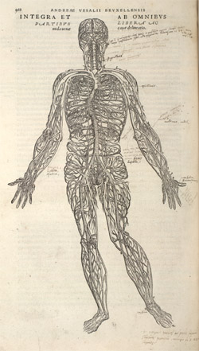
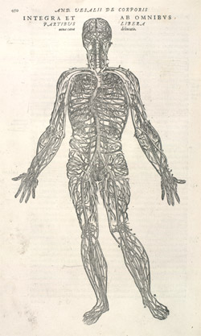
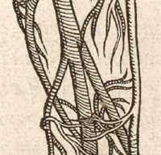
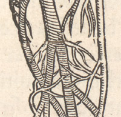

Other works and later editions of the Fabrica
In 1543 Vesalius, with Oporinus again as his printer, also issued the
De humani corporis fabrica librorum Epitome , a set of nine plates,
three of which were similar, but not identical, to those in the Fabrica .
This publication, known as the Epitome , in contrast to the very
expensive Fabrica , was affordable for students.
Subsequently, Vesalius revised the Fabrica itself and a second edition was printed in
Basle by Oporinus in 1555, using the original blocks, some of which were partially amended
(O'Malley, 1964, pp.273-4, describes the changes). The 1543 titlepage was replaced by a new one.
For example, image A, from the 1543 edition (p.368), is a full length plate of a body
illustrating the entire venal system. Image B, is from the second edition
of 1555 (p.450). The details from the right knee of each plate, shown below,
illustrate the remade lower section of the block in the 1555 edition.
A 
B
 
The blocks of both the Fabrica and of the Epitome were printed at various
times in the eighteenth century, ending up in Munich where they were used one final time,
in 1934, to print the Icones anatomicae . Having survived so long,
they were destroyed by bombing during the Second World War.
The success of Vesalius's book, and in particular of the illustrations, can be demonstrated by
tracing their transmission through copies; it is there that its real influence of
can be seen. In the letter to Oporinus with which the text of the Fabrica
began, Vesalius had written: ...I shall attempt in every way in my power to hinder
any inept person from reproducing the plates, made with so much labour for the
general use of students... , and to help achieve that, he offered to lend the blocks
and to help with advice any good printer who might want to issue the material
(Saunders and O'Malley, 1950, p.48). But this, much to his fury, did not prevent
unauthorized copies being produced.
© 2004 Edinburgh University Library / Royal College of Physicians of Edinburgh
www.lib.ed.ac.uk
1 September 2004
|